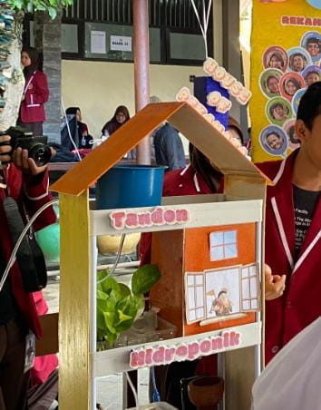

Otomatisasi Sistem Hidrokultur Terintegrasi (Embedded System) | REKAMASA
Otomatisasi Sistem Hidrokultur Terintegrasi bermakna
bahwa sistem penanaman dengan media air akan
dijalankan secara otonom dan setiap komponennya saling
berkesinambungan. Otomatisasi dalam sistem ini
berwujud pompa dan penyiram otomatis terprogram.
Sistem yang kami rancang tak hanya terdiri dari sistem
hidrokultur saja, tetapi juga ada sistem kompos.
Kedua sistem tersebut saling berintegrasi dan membentuk
pengairan yang teregulasi dengan sistematis.
Kembali